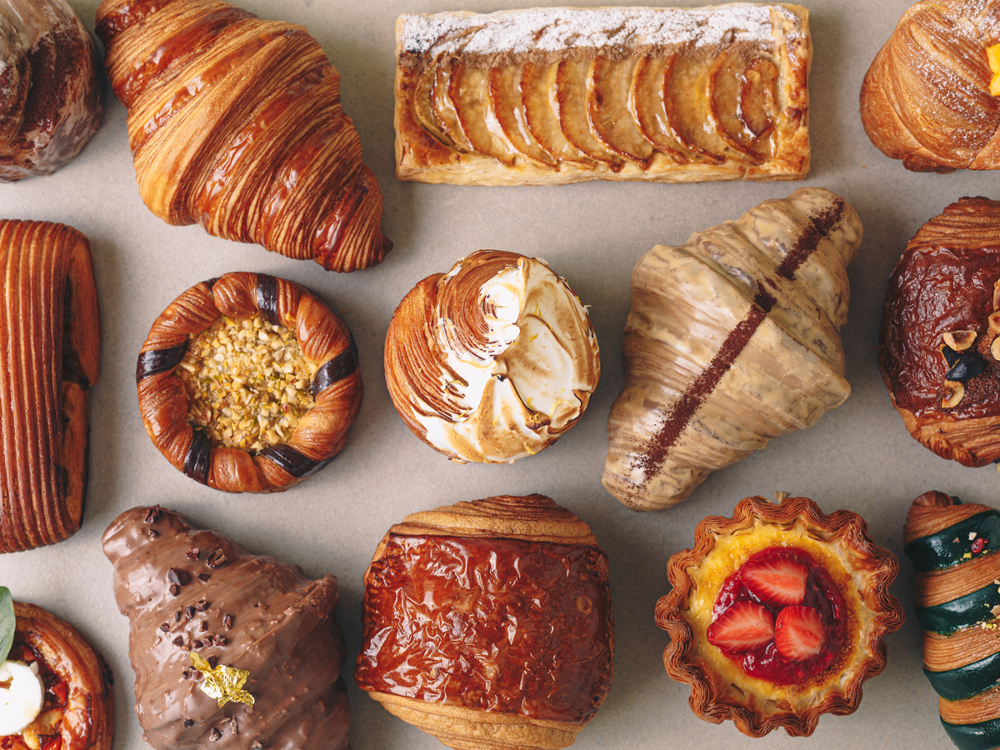
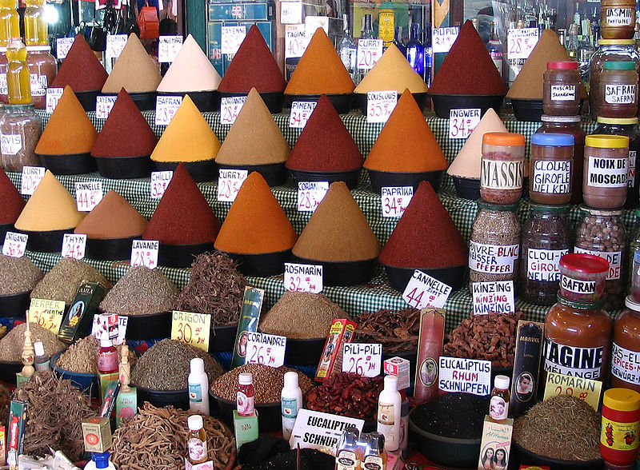
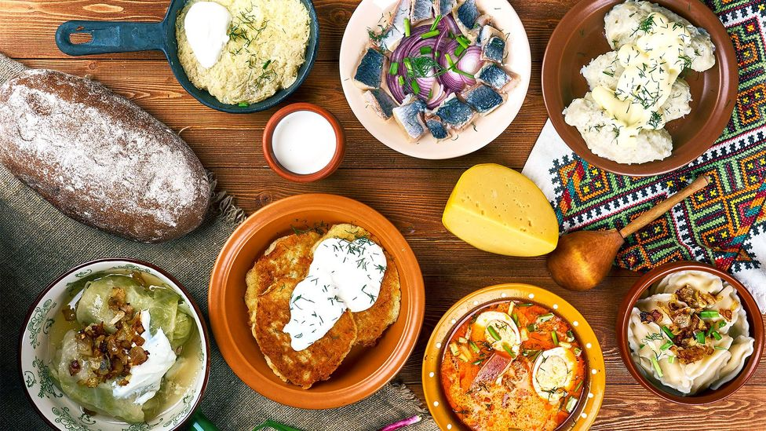

Cooking, cookery, or culinary arts is the art, science and craft of using heat to improve the palatability, digestibility, nutrition, or safety of food. Cooking techniques and ingredients vary widely, from grilling food over an open fire to using electric stoves, to baking in various types of ovens, reflecting local conditions.
Pastry is baked food made with a dough of flour, water and shortening (solid fats, including butter or lard) that may be savoury or sweetened. Sweetened pastries are often described as bakers' confectionery. The word "pastries" suggests many kinds of baked products made from ingredients such as flour, sugar, milk, butter, shortening, baking powder, and eggs. Small tarts and other sweet baked products are called pastries as a synecdoche. Common pastry dishes include pies, tarts, quiches, croissants, and pasties.
A spice is a seed, fruit, root, bark, or other plant substance primarily used for flavoring or coloring food. Spices are distinguished from herbs, which are the leaves, flowers, or stems of plants used for flavoring or as a garnish. Spices are sometimes used in medicine, religious rituals, cosmetics, or perfume production. For example, vanilla is commonly used as an ingredient in fragrance manufacturing.
 More informationLithuanian cuisine features products suited to the cool and moist northern climate of Lithuania: barley, potatoes, rye, beets, greens, berries, and mushrooms are locally grown, and dairy products are one of its specialties. Various ways of pickling were used to preserve food for winter. Soups are extremely popular, and are widely regarded as the key to good health. Since it shares its climate and agricultural practices with Northern Europe, Lithuanian cuisine has much in common with its Baltic neighbors and, in general, northern countries.
 Recomendation